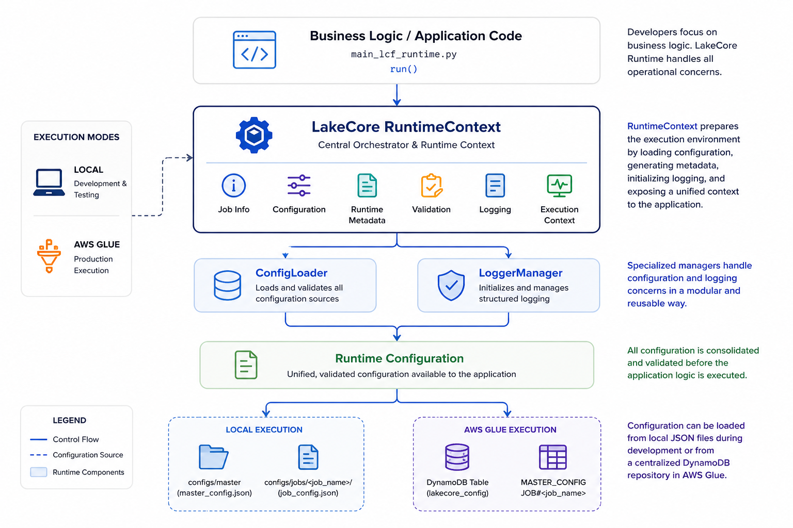
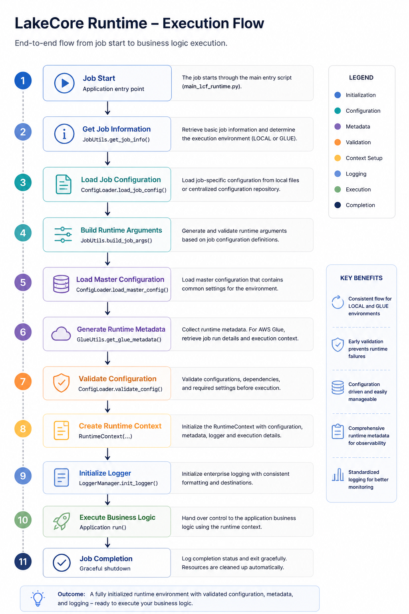
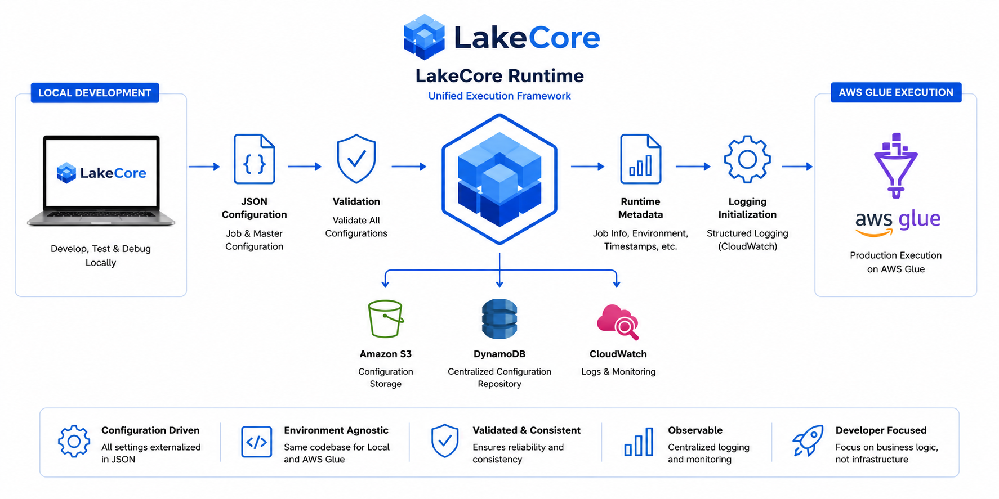

Runtime Initialization
Automatically prepares the execution environment by loading configuration, validating runtime settings, and initializing platform services before application code is executed.
Configuration Driven Runtime Framework for AWS Glue and Local Execution
LakeCore Runtime is the core execution framework of the LakeCore Enterprise Data Platform. It provides a standardized runtime environment that enables data engineering applications to execute consistently across local development and AWS Glue production environments using the same code base and configuration model.
The framework abstracts operational complexity by managing configuration loading, runtime validation, logging, execution metadata, and runtime context creation, allowing developers to focus on business logic rather than infrastructure concerns.

Modern data platforms often require developers to repeatedly implement configuration handling, logging, environment detection, and runtime initialization across multiple projects.
LakeCore Runtime provides a reusable foundation that standardizes these capabilities across all workloads, improving consistency, maintainability, and operational reliability.
With a configuration driven architecture, applications can seamlessly transition between local development and AWS Glue execution without requiring environment specific code changes.
Automatically prepares the execution environment by loading configuration, validating runtime settings, and initializing platform services before application code is executed.
Supports centralized configuration loading and validation, ensuring consistent behavior across environments while reducing hardcoded values within applications.
Provides a unified Runtime Context that exposes configuration, logging, execution metadata, and runtime information through a single interface.
Supports configurable runtime arguments that can be defined and managed without modifying application code.
Delivers structured and standardized logging capabilities for both local and AWS Glue execution environments.
Integrates seamlessly with AWS Glue, providing runtime metadata awareness and centralized configuration management.

Develop and test locally while deploying the same application to AWS Glue without environment specific modifications.
Eliminate repetitive setup logic related to configuration loading, validation, logging, and runtime initialization.
Accelerate project delivery by providing a ready to use runtime framework for data engineering applications.
Standardize execution patterns, configuration management, and operational controls across all projects.
Built to support enterprise AWS Glue workloads with integrated runtime validation, metadata management, and logging capabilities.

LakeCore Runtime serves as the foundational layer for the broader LakeCore ecosystem. Additional LakeCore modules build upon the Runtime framework to provide automated configuration synchronization, deployment automation, and platform management capabilities.
Buy NowLakeCore Runtime serves as the foundational layer for the broader LakeCore ecosystem. Additional LakeCore modules build upon the Runtime framework to provide automated configuration synchronization, deployment automation, and platform management capabilities.